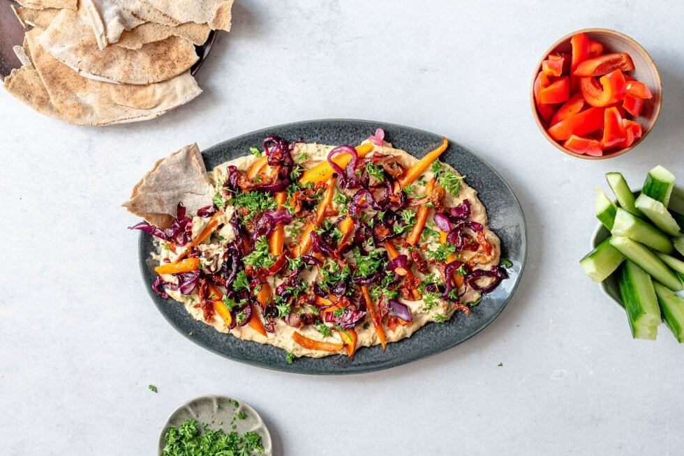

Hummus board met geroosterde wortels en gekarameliseerde ui

Ingredienten:
- 2 verpakkingen Maza Hoemoes Tabouleh kruiden
- 200 g wortels, in reepjes
- 180 g zongedroogde tomaat, in reepjes
- 10 g peterselie, fijnsneden
- olijfolie
- zout en peper
- 2 rode uien, in ringen
- 1 el suiker
- 1 el witte wijnazijn
- 1 el roomboter
- 2 Libanese broden
- 1 komkommer, in repen
- 1 paprika, in repen
Bereiding
- Verwarm de oven voor op 200 °C en verdeel de wortel over een met bakpapier beklede bakplaat en besprenkel met olijfolie, peper en zout. Rooster de wortel 25 minuten in het midden van de oven totdat deze goudbruin is geworden.
-
Verhit ondertussen olie in een koekenpan op middelhoge temperatuur en fruit de ui met een flinke snuf zout totdat deze glazig begint te worden. Bak nog 10 minuten op lage temperatuur. Voeg de witte wijnazijn en de suiker toe en bak nog 20
minuten op lage temperatuur, waarbij je regelmatig roert. Bereid het Libanees brood volgens de instructies op de verpakking en scheur in grove stukken.
-
Verdeel de Hoemoes Tabouleh kruiden over een grote serveerplank of bord, en verdeel hierover de zongedroogde tomaat, peterselie, gekarameliseerde rode ui en gegrilde wortel. Serveer samen met het Libanees brood, de komkommer en de paprika.